5．无穷级数
18世纪的数学家不加辨别地使用无穷级数。到18世纪末，由于应用无穷级数而得到的一些可疑的或者完全荒谬的结果，促使人们追究对无穷级数进行运算的合法性。在1810年前后，傅里叶、高斯和波尔查诺开始确切地处理无穷级数。波尔查诺强调人们必须考虑收敛性，并且特别批评了二项式定理的不严密的证明。阿贝尔是对无穷级数的老式用法的最公开的批评者。
傅里叶在他1811年的论文中，以及在他的《热的解析理论》（1822）中，给出了一个无穷级数收敛的满意的定义，虽然一般说来他是随便使用发散级数的。在书中（英文版p．196）他所讲的收敛的意思是指：当n增加时前n项的和愈来愈趋近一个固定的值，而且同这个值的差变得小于任何给定的量。而且他认识到，只能在x值的一个区间中得到函数级数的收敛性。他还强调指出收敛的必要条件是通项的值趋于零。但是级数1－1＋…仍然愚弄了他，他以为这个级数的和是1/2。
对收敛性的第一个重要而极其严密的研究是由高斯在他1812年的论文《无穷级数的一般研究》（Disquisitiones Generales Circa Seriem Infinitam）(35)中给出的，在那篇文章中他研究了超几何级数F（α，β，γ，x）。在高斯的大多数著作中，如果级数从某一项往后的项减小到零，他就把这个级数叫做收敛的。但在1812年的论文中，他注意到这不是一个正确的概念。因为对α，β和γ不同的选取，超几何级数可以代表许多函数，所以对超几何级数提出一个确切的收敛判别准则看来是高斯的愿望，判别准则是很费劲地得到了，但是只解决了原来想到的级数的收敛性问题。高斯证明了对实的和复的x，如果｜x｜＜1，则超几何级数收敛，而如果｜x｜＞1则发散。对x＝1，级数当且仅当α＋β＜γ时收敛，而对x＝－1，级数当且仅当α＋β＜γ＋1时收敛。论文中异乎寻常的严密性使那时的数学家们丧失了兴趣。此外，高斯只关心特殊的级数而没有着手处理级数收敛的一般原则。
虽然高斯作为第一个认识到需要把级数的使用限制在它们的收敛区域内而被经常提到，但他回避任何决定性的表态。他是如此专心于用数值计算去解决具体问题以至于他使用了Γ函数的斯特林发散展开。当他在1812年决定研究超几何级数的收敛性时，他说(36)，他这样做是为了使那些喜欢古代几何学家严密性的人们高兴，但他没有表明他自己在这方面的立场。在他的论文中(37)，他利用了log（2－2cos x）展为x的倍数的余弦的展开式，可是没有证明这个级数的收敛性，而且按当时可用的技巧而言，也许不可能有证明。高斯在他的天文学和测地学工作中，和18世纪的人一样，沿旧习使用了无穷级数的有限多个项而略去其余项。当他看出后面的项在数值上是小的时候他就停止取项，当然他没有估计误差。
泊松也采取了奇特的立场。他拒绝发散级数(38)，甚至给出了用发散级数作计算怎样会导致错误的例子。尽管如此，当他把一个任意函数表示为三角级数和球函数级数时，他还是广泛地使用了发散级数。
波尔查诺在他1817年的出版物中已经对序列收敛的条件有了正确的概念，现在把这个条件归功于柯西。波尔查诺也已有了关于级数收敛的清楚而正确的概念。但正如我们早先指出的那样，他的工作没有广泛为人所知。
柯西关于级数收敛性的工作是这一课题的第一个具有广泛意义的论述。他在《分析教程》中说：“令
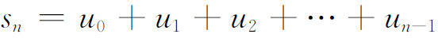
是［我们所研究的无穷级数］前n项的和，n表示自然数。如果对于不断增加的n的值，和sn无限趋近某一极限s，则级数叫做收敛的，而这个极限值叫做该级数的和(39)。反之，如果当n无限增加时，sn不趋于一个固定的极限，该级数就叫做发散的，而且级数没有和。”
在定义了收敛和发散以后，柯西叙述了（《教程》，p．125）柯西收敛判别准则，即序列
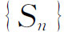
收敛到一个极限S，当且仅当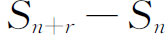
的绝对值对于一切r和充分大的n都小于任何指定的量。柯西证明了这个条件是必要的，但是仅仅指出，如果条件成立，序列的收敛性就有了保证。要做出证明，他还缺少有关实数性质的知识。柯西然后叙述并证明了正项级数收敛的一些特殊的判别法。他指出un必须趋于零。另一个判别法（《教程》，p．132-135）需要人们求出当n变为无穷时表达式
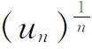
趋向的一个或几个极限，用k来记这些极限中的最大者。如果k＜1则级数收敛，如果k＞1则级数发散。他也给出了使用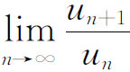
的比值判别法。如果这个极限小于1则级数收敛，如果极限大于1则级数发散。如果比值为1，还给出了比值为1时的特殊判别法。接着是比较判别法和对数判别法。他证明了两个收敛级数的和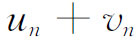
收敛到各自极限的和，对于乘积也有类似的结果。对于带有负项的级数，柯西证明了由项的绝对值构成的级数收敛时原级数收敛，然后他推导了交错级数的莱布尼茨判别法。柯西也研究了级数
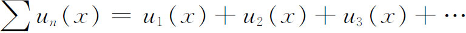
的和，其中所有的项都是单值的连续实函数。这里用常数项级数的定理来确定收敛区间。他也研究了项是复变函数的级数。
拉格朗日是第一个叙述带余项的泰勒定理的人，但柯西在他的1823年和1829年的教科书中指出了重要的一点：如果余项趋于零，则泰勒级数收敛到导出该级数的函数。他给出了泰勒级数不收敛到导出该级数的一个函数的例子
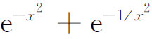
。在他的1823年的教科书中，他给出了一个例子，函数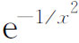
在x＝0有各阶导数，但在x＝0邻近没有泰勒展开。这里他用一个例子反驳了拉格朗日在他的《函数论》（Théorie des fonctions）（第V章，第30条）中的断言：如果f（x）在x0有各阶导数，则f（x）可表示为在x0附近的x处收敛到f（x）的泰勒级数。柯西还在泰勒公式中给出了另一形式的余项公式(40)。在这里，柯西在严密性方面有些失检。在他的《分析教程》（pp．131-132）中他说，如果当
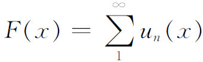
时级数收敛且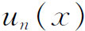
都连续，则f（x）是连续的。在他的《概论》(41)中，他说，如果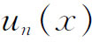
都连续且级数收敛，则对级数可以逐项积分；即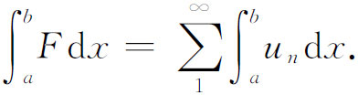
他忽视了一致收敛性的要求。对于连续函数他还断言(42)
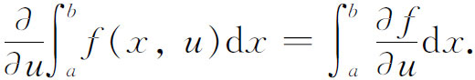
柯西的著作鼓舞了阿贝尔。阿贝尔在1826年从巴黎写给他原先的老师霍尔姆伯（Berndt Michael Holmboë）的信(43)中说，柯西“是当今懂得应该怎样对待数学的人”。在那一年(44)阿贝尔研究了m和复的x的二项级数
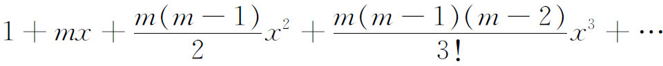
的收敛区域。他对以前没有人去研究这个最重要的级数的收敛性表示惊讶。他首先证明级数
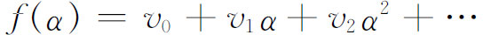
（其中vi是常数而α是正实数）如果对α的一个值δ收敛，则级数对α的每个较小的值也收敛，而且当α小于等于δ时，对于趋于0的β，f（α－β）趋于f（α）。最后一部分说一个对于变量α小于等于δ收敛的幂级数是变量的连续函数。
阿贝尔在1826年的同一篇论文中(45)改正了柯西关于连续函数的一个收敛级数的和一定连续的错误。他给出了例子
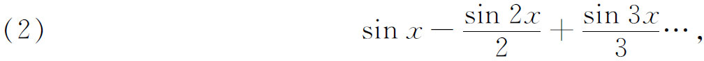
虽然（2）的每一项都是连续的，但是，当
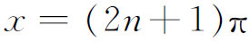
而n是整数时，（2）是不连续的(46)。然后他用一致收敛的思想正确地证明了连续函数的一个一致收敛级数的和在收敛区域内部是连续的。阿贝尔没有从中把一致收敛的性质抽调出来。级数
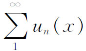
的一致收敛概念要求对任意给定的ε存在N，使得对所有的n＞N，对某个区间上的一切x都有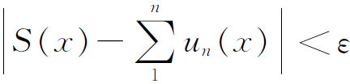
。S（x）当然就是级数的和。这个概念本身为一个第一流的数学物理学家斯托克斯（George Gabriel Stokes）清楚地认识(47)，而且也为赛德尔（Philipp L．Seidel，1821—1896）独立地认识(48)。两个人都没有给出确切的系统阐述。倒不如说他们两人指出了如果连续函数的一个级数的和在x＝x0点不连续，则在x0附近有一些x值，使得级数在这些点上任意慢地收敛。他们也没有指出需要一致收敛性去验证级数逐项积分的合法性。事实上，斯托克斯接受了柯西的逐项积分的用法(49)。柯西最后还是认识到，为了断言连续函数的级数的和一定连续，需要一致收敛性(50)。但即使是柯西，在当时也未看出他自己在使用级数的逐项积分中的错误。实际上魏尔斯特拉斯(51)早在1842年就有了一致收敛的概念。他无意中重复了柯西关于一阶常微分方程的幂级数解的存在定理。在此定理中，他断言级数一致收敛。因而构成复变量的解析函数。大约在同一时期，魏尔斯特拉斯利用一致收敛的概念，给出了级数逐项积分和在积分号下求微分的条件。
通过魏尔斯特拉斯周围的学生，人们知道了一致收敛的重要性。海涅在一篇关于三角级数的论文中强调了这个概念(52)。海涅也许已经通过康托尔听到了这个思想，康托尔曾在柏林学习，然后在1867年去哈雷（Halle），在那里他是一个数学教授。
魏尔斯特拉斯在当中学教师期间，还发现在实轴的一个闭区间上连续的任何函数可以表示为这个区间上的绝对一致收敛的多项式级数。魏尔斯特拉斯的结论对多变量函数也对。这个结果(53)引起人们极大的兴趣，在19世纪的最后四分之一年代中，建立了这个结果的许多推广，推广到用一个多项式级数或用一个有理函数级数来表示复变函数。
人们曾假定级数的项是可以任意重新排列的。1837年狄利克雷在一篇论文(54)中证明了对于一个绝对收敛的级数，人们可以组合或重新排列它的项而不改变级数的和。他还给出例子说明，任何一个条件收敛的级数的项可以重新排列而使级数的和不相同。黎曼在1854年写的一篇论文（见下文）中证明了适当重排级数的项可以使级数的和等于任何给定的数值。从1830年代直到19世纪末，许多第一流的数学家推导了无穷级数收敛的很多判别法则。